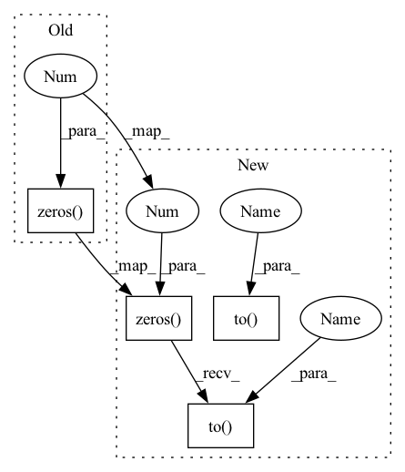

Pattern ID :24658

Before Change
self.softmax = nn.Softmax(dim=0)
// Initialize the hidden state and cell state
self.hidden = torch.zeros(2, 1, self.dim_hd)
self.cell = torch.zeros(2, 1, self.dim_hd)
self.change_device()
After Change
self.softmax = nn.Softmax(dim=0)
// Initialize the hidden state and cell state
self.hidden = torch.zeros(2, 1, self.dim_hd).to(device)
self.cell = torch.zeros(2, 1, self.dim_hd).to(device)
self.to(device)
In pattern: SUPERPATTERN
Frequency: 6
Non-data size: 4
Instances
Fragment ID: 76476318
Project Name: mjhydri/beatnet
Commit Name: c7e2b2fd174b3fc9318b1990fe6e0c75edb91bb7
Time: 2022-07-12
Author: rejnald.lleshi@gmail.com
File Name: src/BeatNet/model.py
M Class Name: BDA
N Class Name: BDA
M Method Name: __init__(5)
N Method Name: __init__(5)
M Parent Class: nn.Module
N Parent Class: nn.Module
M File Name: src/BeatNet/model.py
N File Name: src/BeatNet/model.py
M Start Line: 12
M End Line: 32
N Start Line: 12
N End Line: 34
'>
Before Change
self.assertEqual(pooled_embeddings["f2"].shape, (features.stride(), 4))
self.assertEqual(pooled_embeddings["f3"].shape, (features.stride(), 4))
torch.testing.assert_close(pooled_embeddings["f1"][1], torch.zeros(4))
torch.testing.assert_close(pooled_embeddings["f3"][0], torch.zeros(4))
torch.testing.assert_close(pooled_embeddings["f3"][2], torch.zeros(4))
After Change
self.assertEqual(pooled_embeddings["f3"].shape, (features.stride(), 4))
torch.testing.assert_close(
pooled_embeddings["f1"][1], torch.zeros(4).to(device)
)
torch.testing.assert_close(
pooled_embeddings["f3"][0], torch.zeros(4).to(device)
)
torch.testing.assert_close(
pooled_embeddings["f3"][2], torch.zeros(4).to(device)
)
'>
Fragment ID: 76476319
Project Name: pytorch/torchrec
Commit Name: bd85c77752c7b71dcb71d554eb6f07d6a92648ee
Time: 2022-06-09
Author: yingliufb@fb.com
File Name: torchrec/modules/tests/test_fused_embedding_modules.py
M Class Name: FusedEmbeddingBagCollectionTest
N Class Name: FusedEmbeddingBagCollectionTest
M Method Name: test_unweighted(2)
N Method Name: test_unweighted(1)
M Parent Class: unittest.TestCase
N Parent Class: unittest.TestCase
M File Name: torchrec/modules/tests/test_fused_embedding_modules.py
N File Name: torchrec/modules/tests/test_fused_embedding_modules.py
M Start Line: 49
M End Line: 64
N Start Line: 38
N End Line: 83
'>
Before Change
def _score_sentence(self, feats, tags):
// Gives the score of a provided tag sequence 当前句子的tag路径score
score = torch.zeros(1)
tags = torch.cat([torch.tensor([self.tag2id[START_TAG]], dtype=torch.long), tags])
for i, feat in enumerate(feats):
score = score + \
self.transitions[tags[i + 1], tags[i]] + feat[tags[i + 1]]
After Change
def _score_sentence(self, feats, tags):
// Gives the score of a provided tag sequence
score = torch.zeros(1).to(device)
tags = torch.cat([torch.tensor([self.tag2id[START_TAG]], dtype=torch.long).to(device), tags]).to(device)
for i, feat in enumerate(feats):
score = score + \
self.transitions[tags[i + 1], tags[i]] + feat[tags[i + 1]]
'>
Fragment ID: 76476316
Project Name: whitegive-boy/cws-hmm_bilstm-crf
Commit Name: 578bac2cdb44819e59118f47fe26e6ed5c93509d
Time: 2021-04-28
Author: 56426042+WhiteGive-Boy@users.noreply.github.com
File Name: BiLSTM-CRF/model.py
M Class Name: Model
N Class Name: Model
M Method Name: _score_sentence(3)
N Method Name: _score_sentence(3)
M Parent Class: nn.Module
N Parent Class: nn.Module
M File Name: BiLSTM-CRF/model.py
N File Name: BiLSTM-CRF/model.py
M Start Line: 106
M End Line: 107
N Start Line: 102
N End Line: 103
'>
Before Change
self.softmax = nn.Softmax(dim=0)
// Initialize the hidden state and cell state
self.hidden = torch.zeros(2, 1, self.dim_hd)
self.cell = torch.zeros(2, 1, self.dim_hd)
self.change_device()
After Change
self.softmax = nn.Softmax(dim=0)
// Initialize the hidden state and cell state
self.hidden = torch.zeros(2, 1, self.dim_hd).to(device)
self.cell = torch.zeros(2, 1, self.dim_hd).to(device)
self.to(device)
'>
Fragment ID: 76476317
Project Name: mjhydri/beatnet
Commit Name: c7e2b2fd174b3fc9318b1990fe6e0c75edb91bb7
Time: 2022-07-12
Author: rejnald.lleshi@gmail.com
File Name: src/BeatNet/model.py
M Class Name: BDA
N Class Name: BDA
M Method Name: __init__(5)
N Method Name: __init__(5)
M Parent Class: nn.Module
N Parent Class: nn.Module
M File Name: src/BeatNet/model.py
N File Name: src/BeatNet/model.py
M Start Line: 12
M End Line: 32
N Start Line: 12
N End Line: 34
'>
Before Change
self.assertEqual(pooled_embeddings["f1"].shape, (features.stride(), 4))
self.assertEqual(pooled_embeddings["f2"].shape, (features.stride(), 4))
torch.testing.assert_close(pooled_embeddings["f1"][1], torch.zeros(4))
def test_state_dict(self) -> None:
eb1_config = EmbeddingBagConfig(
After Change
// f2 [3] [4] [5,6,7]
// ^
// feature
features = KeyedJaggedTensor.from_lengths_sync(
keys=["f1", "f2"],
values=torch.tensor([0, 1, 2, 3, 4, 5, 6, 7]),
lengths=torch.tensor([2, 0, 1, 1, 1, 3]),
).to(device)
pooled_embeddings = ebc(features)
self.assertEqual(pooled_embeddings.keys(), ["f1", "f2"])
self.assertEqual(pooled_embeddings["f1"].shape, (features.stride(), 4))
self.assertEqual(pooled_embeddings["f2"].shape, (features.stride(), 4))
torch.testing.assert_close(
pooled_embeddings["f1"][1], torch.zeros(4).to(device)
)
@settings(deadline=None)
// pyre-ignore
'>
Fragment ID: 76476330
Project Name: facebookresearch/torchrec
Commit Name: bd85c77752c7b71dcb71d554eb6f07d6a92648ee
Time: 2022-06-09
Author: yingliufb@fb.com
File Name: torchrec/modules/tests/test_fused_embedding_modules.py
M Class Name: FusedEmbeddingBagCollectionTest
N Class Name: FusedEmbeddingBagCollectionTest
M Method Name: test_shared_tables(2)
N Method Name: test_shared_tables(1)
M Parent Class: unittest.TestCase
N Parent Class: unittest.TestCase
M File Name: torchrec/modules/tests/test_fused_embedding_modules.py
N File Name: torchrec/modules/tests/test_fused_embedding_modules.py
M Start Line: 81
M End Line: 93
N Start Line: 91
N End Line: 121